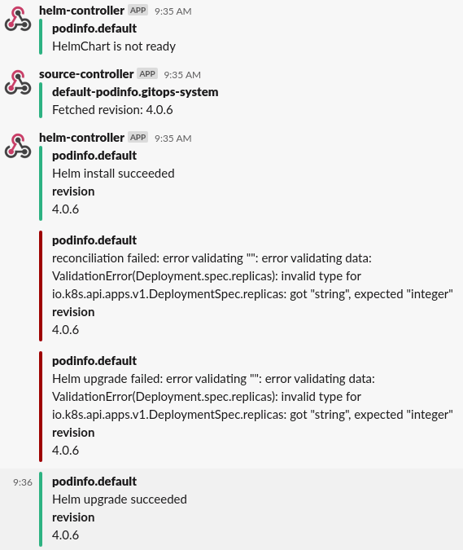

Manage Helm Releases¶
The helm-controller allows you to
declaratively manage Helm chart releases with Kubernetes manifests.
It makes use of the artifacts produced by the
source-controller from
HelmRepository, GitRepository, and HelmChart resources.
The helm-controller is part of the default toolkit installation.
Prerequisites¶
To follow this guide you'll need a Kubernetes cluster with the GitOps toolkit controllers installed on it. Please see the get started guide or the installation guide.
Define a chart source¶
To be able to release a Helm chart, the source that contains the chart
(either a HelmRepository or GitRepository) has to be known first to
the source-controller, so that the HelmRelease can reference to it.
A cluster administrator should register trusted sources by creating
the resources in the gotk-system namespace. By default, the
source-controller watches for sources only in the gotk-system
namespace, this way cluster admins can prevent untrusted sources from
being registered by users.
Helm repository¶
Helm repositories are the recommended source to retrieve Helm charts from, as they are lightweight in processing and make it possible to configure a semantic version selector for the chart version that should be released.
They can be declared by creating a HelmRepository resource, the
source-controller will fetch the Helm repository index for this
resource on an interval and expose it as an artifact:
apiVersion: source.toolkit.fluxcd.io/v1alpha1
kind: HelmRepository
metadata:
name: podinfo
namespace: gotk-system
spec:
interval: 1m
url: https://stefanprodan.github.io/podinfo
The interval defines at which interval the Helm repository index
is fetched, and should be at least 1m. Setting this to a higher
value means newer chart versions will be detected at a slower pace,
a push-based fetch can be introduced using webhook receivers
The url can be any HTTP/S Helm repository URL.
Authentication
HTTP/S basic and TLS authentication can be configured for private
Helm repositories. See the HelmRepository CRD docs
for more details.
Git repository¶
Charts from Git repositories can be released by declaring a
GitRepository, the source-controller will fetch the contents
of the repository on an interval and expose it as an artifact.
The source-controller can build and expose Helm charts as
artifacts from the contents of the GitRepository artifact
(more about this later on in the guide).
There are two caveats you should be aware of:
- To make the source-controller produce a new chart artifact,
the
versionin theChart.yamlof the chart must be bumped. - Chart dependencies must be committed to Git, as the source-controller does not attempt to download them. This limitation may be removed in a future release.
An example GitRepository:
apiVersion: source.toolkit.fluxcd.io/v1alpha1
kind: GitRepository
metadata:
name: podinfo
namespace: gotk-system
spec:
interval: 1m
url: https://github.com/stefanprodan/podinfo
ref:
branch: master
ignore: |
# exclude all
/*
# include charts directory
!/charts/
The interval defines at which interval the Git repository contents
are fetched, and should be at least 1m. Setting this to a higher
value means newer chart versions will be detected at a slower pace,
a push-based fetch can be introduced using webhook receivers
The url can be any HTTP/S or SSH address (the latter requiring
authentication).
The ref defines the checkout strategy, and is set to follow the
master branch in the above example. For other strategies like
tags or commits, see the GitRepository CRD docs.
The ignore defines file and folder exclusion for the
artifact produced, and follows the .gitignore pattern
format.
The above example only includes the charts directory of the
repository and omits all other files.
Authentication
HTTP/S basic and SSH authentication can be configured for private
Git repositories. See the GitRepository CRD docs
for more details.
Define a Helm release¶
With the chart source created, define a new HelmRelease to release
the Helm chart:
apiVersion: helm.toolkit.fluxcd.io/v2alpha1
kind: HelmRelease
metadata:
name: podinfo
namespace: default
spec:
interval: 5m
chart:
spec:
chart: <name|path>
version: '4.0.x'
sourceRef:
kind: <HelmRepository|GitRepository>
name: podinfo
namespace: gotk-system
interval: 1m
values:
replicaCount: 2
The chart.spec values are used by the helm-controller as a template
to create a new HelmChart resource in the same namespace as the
sourceRef. The source-controller will then lookup the chart in the
artifact of the referenced source, and either fetch the chart for a
HelmRepository, or build it from a GitRepository. It will then
make it available as a HelmChart artifact to be used by the
helm-controller.
The chart.spec.chart can either contain:
- The name of the chart as made available by the
HelmRepository(without any aliases), for example:podinfo - The relative path the chart can be found at in the
GitRepository, for example:./charts/podinfo
The chart.spec.version can be a fixed semver, or any semver range
(i.e. >=4.0.0 <5.0.0). It is ignored for HelmRelease resources
that reference a GitRepository source.
Advanced configuration
The HelmRelease offers an extensive set of configurable flags
for finer grain control over how Helm actions are performed.
See the HelmRelease CRD docs
for more details.
Refer to values in ConfigMap and Secret resources¶
It is possible to define a list of ConfigMap and Secret resources
from which to take values. The values are merged in the order given,
with the later values overwriting earlier. These values always have a
lower priority than the values inlined in the HelmRelease via the
spec.values parameter.
spec:
valuesFrom:
- kind: ConfigMap
name: prod-env-values
valuesKey: values-prod.yaml
- kind: Secret
name: prod-tls-values
valuesKey: crt
targetPath: tls.crt
The definition of the listed keys is as follows:
kind: Kind of the values referent (ConfigMaporSecret).name: Name of the values referent, in the same namespace as theHelmRelease.valuesKey(Optional): The data key where the values.yaml or a specific value can be found. Defaults tovalues.yamlwhen omitted.targetPath(Optional): The YAML dot notation path at which the value should be merged. When set, thevaluesKeyis expected to be a single flat value. Defaults toNonewhen omitted, which results in the values getting merged at the root.
Note
The targetPath supports the same formatting as you would supply
as an argument to the helm binary using --set [path]=[value].
In addition to this, the referred value can contain the same
value formats (e.g. {a,b,c} for a list).
You can read more about the available formats and limitations in
the Helm documentation.
Configure notifications¶
The default toolkit installation configures the helm-controller to broadcast events to the notification-controller.
To receive the events as notifications, a Provider needs to be setup
first as described in the notifications guide.
Once you have set up the Provider, create a new Alert resource in
the gotk-system to start receiving notifications about the Helm
release:
apiVersion: notification.toolkit.fluxcd.io/v1alpha1
kind: Alert
metadata:
generation: 2
name: helm-podinfo
namespace: gotk-system
spec:
providerRef:
name: slack
eventSeverity: info
eventSources:
- kind: HelmRepository
name: podinfo
- kind: HelmChart
name: default-podinfo
- kind: HelmRelease
name: podinfo
namespace: default

Configure webhook receivers¶
When using semver ranges for Helm releases, you may want to trigger an update as soon as a new chart version is published to your Helm repository. In order to notify source-controller about a chart update, you can setup webhook receivers.
First generate a random string and create a secret with a token field:
TOKEN=$(head -c 12 /dev/urandom | shasum | cut -d ' ' -f1)
echo $TOKEN
kubectl -n gotk-system create secret generic webhook-token \
--from-literal=token=$TOKEN
When using Harbor as your Helm repository, you can define a receiver with:
apiVersion: notification.toolkit.fluxcd.io/v1alpha1
kind: Receiver
metadata:
name: helm-podinfo
namespace: gotk-system
spec:
type: harbor
secretRef:
name: webhook-token
resources:
- kind: HelmRepository
name: podinfo
The notification-controller generates a unique URL using the provided token and the receiver name/namespace.
Find the URL with:
$ kubectl -n gotk-system get receiver/helm-podinfo
NAME READY STATUS
helm-podinfo True Receiver initialised with URL: /hook/bed6d00b5555b1603e1f59b94d7fdbca58089cb5663633fb83f2815dc626d92b
Log in to the Harbor interface, go to Projects, select a project, and select Webhooks. Fill the form with:
- Endpoint URL: compose the address using the receiver LB and the generated URL
http://<LoadBalancerAddress>/<ReceiverURL> - Auth Header: use the
tokenstring
With the above settings, when you upload a chart, the following happens:
- Harbor sends the chart push event to the receiver address
- Notification controller validates the authenticity of the payload using the auth header
- Source controller is notified about the changes
- Source controller pulls the changes into the cluster and updates the
HelmChartversion - Helm controller is notified about the version change and upgrades the release
Note
Besides Harbor, you can define receivers for GitHub, GitLab, Bitbucket and any other system that supports webhooks e.g. Jenkins, CircleCI, etc. See the Receiver CRD docs for more details.